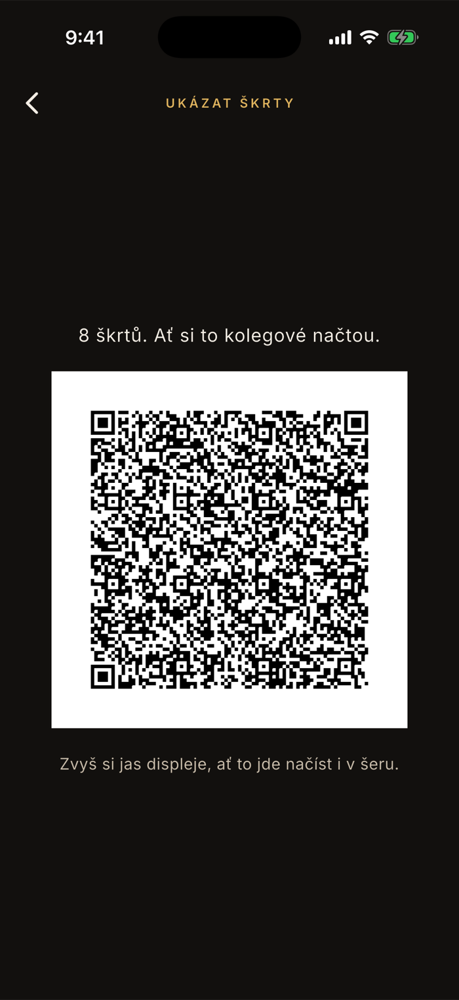
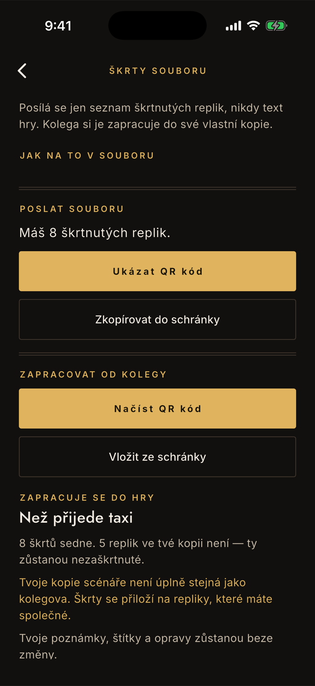

Soubor
Sdílení škrtů se souborem
Režisér nadiktuje škrty na zkoušce a celý soubor si je pak přepisuje do svých scénářů — každý zvlášť, každý znovu, a chyby se odhalí až na jevišti. Tohle je způsob, jak je zapíše jeden člověk a ostatní si je převezmou. Posílá se přitom jen seznam škrtnutých replik, nikdy text hry.
Kde to je
Nastavení → Škrty souboru. Obrazovka má dvě poloviny: horní posílá vaše škrty, spodní přebírá cizí. Je to funkce plné verze — škrtat a učit se ze škrtnutého textu jde zdarma, placené je až rozeslání celému souboru.
Poslat souboru
QR do šatny, schránka do skupiny
Obě cesty nesou totéž a je jedno, kterou zvolíš. Ukázat QR kód je na situaci, kdy stojíte spolu — ukážeš displej a ostatní si to načtou. Zkopírovat do schránky je pro ty, co u zkoušky nebyli.
Nejdřív si škrty zapiš
Postup je v návodu o škrtech. Dokud žádné nemáš, obě tlačítka jsou vypnutá a nahoře stojí „Zatím nemáš žádné škrty."
QR: zvyš si jas
Aplikace to sama připomíná. V šeru na chodbě je to rozdíl mezi „načteno" a pěti pokusy. Kód je vždycky na bílém podkladu, i v tmavém motivu — čtečky jinak část kódů nepřečtou.
Schránka: pošli, jak jste zvyklí
Po zkopírování se ukáže „N škrtů ve schránce. Pošli je souboru." Vlož je do skupiny nebo do mailu. Je to krátký kus textu, žádná příloha.

Zapracovat od kolegy
Uvidíš dopředu, co se stane
Škrt mění, co se ti drilluje, takže se nezapracovává naslepo. Po načtení kódu nebo vložení ze schránky se dole objeví náhled: do které hry to půjde a kolik škrtů v tvé kopii nesedne. Teprve pak se ťuká na Zapracovat škrty.
Hra se najde sama
Podle replik, ne podle názvu. Nová inscenace tím nikdy nevznikne — seznam nenese text, takže by nebylo z čeho ji vyrobit. Hru musíš mít naimportovanou.
Co nesedne, zůstane nezaškrtnuté
Když se vaše kopie liší, aplikace to řekne rovnou: „N škrtů sedne. M replik ve tvé kopii není." Zbytek si doškrtáš ručně — nic se neztratí potichu.
Tvoje zápisky zůstanou
Poznámky, štítky ani ruční opravy se nepřepisují. Seznam nese výhradně škrty — poznámky jsou tvoje věc ze zkoušky, ne režisérovo rozhodnutí.

Když to nesedne
„Tohle není seznam škrtů."
Ve schránce je něco jiného, než co aplikace očekává — typicky se zkopírovala jen část zprávy, nebo se mezitím zkopírovalo něco jiného. Nechte si od kolegy poslat seznam znovu a vyberte ho celý.
„Ani jedna z tvých her tyhle repliky nemá."
Seznam je platný, ale nepatří k ničemu, co máte v aplikaci. Buď je k jiné hře, nebo ji nemáte naimportovanou — nebo se vaše kopie od kolegovy liší tak moc, že se nedají spolehlivě spárovat.
Aplikace párování raději odmítne, než aby škrty přiložila naslepo. Přiložit je na špatné repliky by znamenalo učit se text, který se hraje, jako škrtnutý — a to se pozná až na jevišti.
Proč se některé škrty nepřiloží
Protože repliky se poznávají podle obsahu, ne podle pořadí. Dvě kopie téhož překladu se běžně liší o desítky replik — jiné formátování, jiná verze od agentury, ručně doplněný řádek. Co je v obou kopiích stejné, sedne; zbytek zůstane nezaškrtnutý a aplikace vám ho spočítá.
Když se vaše kopie liší, ukáže se navíc věta „Tvoje kopie scénáře není úplně stejná jako kolegova." Je to upozornění, ne chyba — jen vězte, že se seznam nepřiložil celý.
Místo QR kódu se ukáže text nebo prázdné místo
Do jednoho kódu se vejde jen omezené množství dat, takže při stovkách škrtů už se nevejde. A škrty na ručně doplněných replikách se do kódu nedostanou vůbec — ty existují jen ve vaší kopii.
V obou případech použijte schránku: ta unese libovolný počet i doplněné repliky. Novější verze aplikace to na místě kódu vysvětlí; ve starší tam zůstane prázdné místo, což vypadá jako chyba, ale řešení je totéž.
Musíme mít všichni úplně stejný soubor?
Nemusíte, ale vyplatí se to. Když jeden člověk rozešle tentýž soubor všem a každý si ho naimportuje z něj, sednou škrty na první pokus a nikdo nic nedoškrtává. Zabere to pět minut na začátku.
Aplikace na to má vlastní stručný postup — v obrazovce sdílení je odkaz Jak na to v souboru, který se dá ukázat i ostatním.
Proč se posílá seznam, a ne text
Protože scénář je chráněné dílo a k divadelním překladům patří smlouva. Rozeslat text hry přes aplikaci by bylo šíření cizího díla — proto Nazkoušeno text nikdy neposílá a rozeslat scénář zůstává na vás, mimo aplikaci, stejně jako dosud.
Seznam změn nese jen odkazy na repliky a typ změny. Komu se dostane do ruky bez scénáře, nemá z něj nic — a to je přesně důvod, proč tahle funkce vůbec smí existovat.
Co škrt udělá s vaším nástupem
Po zapracování se může objevit hlášení, že se vám změnily narážky. Škrt v cizí replice znamená, že nastupujete po něčem jiném — text umíte, ale narážku ne. Rozebírá to stránka o škrtech.
Nesedí vám škrty od kolegy, nebo si nejste jistí, co se posílá?
contact@lukashula.cz